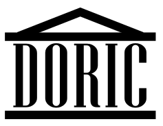

欢迎使用Doric，本文档将帮助您快速上手。如果您在使用过程中遇到任何问题，请在GitHub上提问。

Doric是什么?
Doric 是一个极简高效的跨端开发框架，使用TypeScript作为开发语言。
上层遵循MVVM设计，可以在多终端平台上执行，实现一份代码多处执行。
目前已经支持Android、iOS、Web及Qt，后续可按需接入更多场景平台。
环境准备
使用 Doric 前，需要准备好下列开发环境:
Doric使用TypeScript作为开发语言，推荐使用编辑器
如果需要进行Android应用的运行或插件开发，请准备好：
如果需要进行iOS应用的运行或插件开发，请准备好：
安装与运行
命令行工具
当必需的开发环境准备就绪后，即可使用npm安装Doric命令行工具.
npm install -g doric-cli |
更多详细用法请查看文档命令行工具
Doric Playground
您可以安装Doric Playground APP来快速查看运行效果
开发与调试
请查看文档Doric 开发与调试